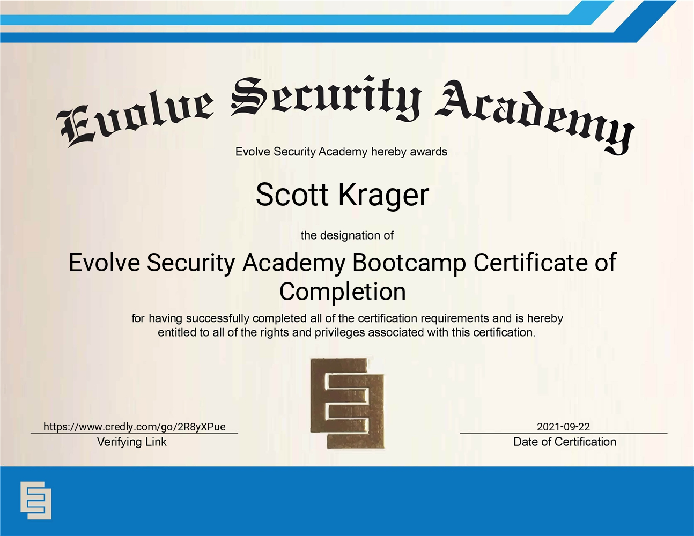
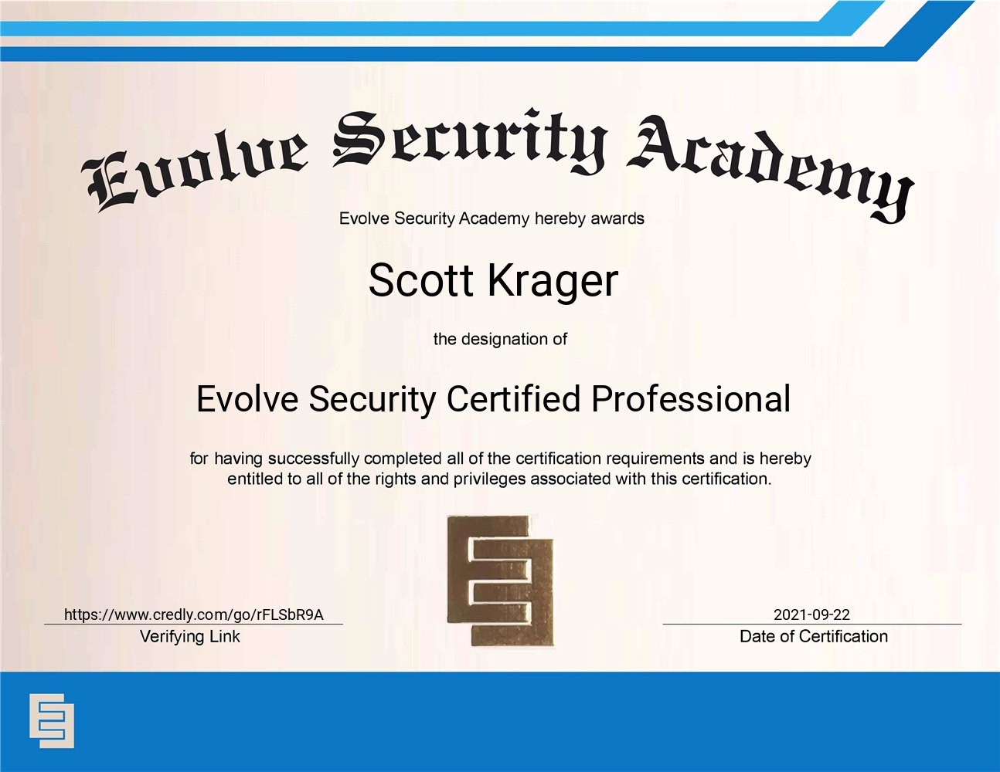

I have completed two certifications through CompTIA so far. The first is Security+ which demonstrates the knowledge and skills required to assess the security posture of an enterprise environment and recommend and implement appropriate security solutions; monitor and secure hybrid environments, including cloud, mobile, and IoT; operate with an awareness of applicable laws and policies, including principles of governance, risk, and compliance; identify, analyze, and respond to security events and incidents.

The second is the A+. This exam comprises of two separate parts, both of which must be passed in order to become certified. The first exam,CompTIA A+ 220-1101, covered: mobile devices, networking technology, hardware, virtualization and cloud computing. The second part of the exam, CompTIA A+ 220-1102 covered: operating systems, security, software and operational procedures.

I have also received two certifcations from Evolve Security Academy. The first certificate shows my understanding of technical cybersecurity concepts including: networking, scripting, vulnerability assessments, SecOps architecture, cloud security, social engineering, threat hunting, threat intelligence, and incident detection and response. I have also demonstrated technical competency of tools including Nmap, Wireshark, BurpSuite, Kali Linux, Metasploit, Nessus, OSINT, Splunk, AWS security and practical competency by completing a cybersecurity apprenticeship with a capstone Not-For-Profit Vulnerability Assessment with report and presentation to the client.

The second shows knowledge in hands-on labs with an intermediate understanding of technical cybersecurity tools through technical competency in network traffic, web application assessment, network architecture, cloud security and scripting by passing a 5-hour written exam and a 24-hour lab exam.

Another certificate I earned was for the Splunk Fundamentals course. It taught all of the basics for Splunk including: components, data ingestion, basic searches, using the search field, best practices, the Splunk Search Language, various commands, creating reports and dashboards, and creating lookups and scheduled reports and alerts.